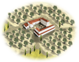
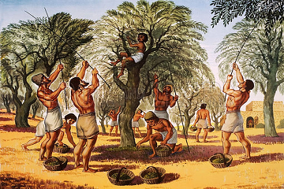
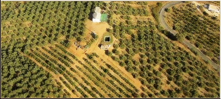

RTR: Imperium Surrectum
RTR: Imperium SurrectumOlive Oil Production
4 levels, each replacing the one before it — you upgrade in place rather than building alongside.
Olive Grove (Rural) → Olive Press (Rural) → Olive Oil Mill (Rural) → Olive Oil Exports (Rural)
Levels at a glance
| Level | Cost | Build time | Minimum settlement | Upgrades to | Level | Cost | Build time | Minimum settlement | Upgrades to | ||
|---|---|---|---|---|---|---|---|---|---|---|---|
| Olive Grove (Rural) | 1,000 | 3 | town | Olive Press (Rural) | Olive Press (Rural) | 2,000 | 4 | large town | Olive Oil Mill (Rural) | ||
| Olive Oil Mill (Rural) | 3,000 | 5 | city | Olive Oil Exports (Rural) |  | Olive Oil Exports (Rural) | 8,000 | 8 | large city | — |
Costs in denarii, build time in turns.
Olive Grove (Rural)

A small olive grove has taken root, where the future of olive oil begins, one olive at a time.
Behold, the quiet olive tree, though slow to grow, yields a prized fruit whose oil is worth its weight in gold, or at least a few amphoras of it.
In this small grove, the journey begins, as every plump olive is carefully plucked, destined for amphoras that will one day line the markets. From the dawn of history, oil has played a major role: perfumed and worn to festivals, drizzled over feasts, and even set ablaze in lamps to light the shadows. No respectable symposium was without it, and few funeral rites could do without anointing its guests of honour, the dead themselves. And let’s not forget the olive's hardy wood, it burns, wet or dry, making it a faithful companion for hearth and forge alike.
This small orchard may look simple, but it is the seed from which an empire’s oil flows.
Olive oil was common in ancient Greek, Punic and Roman cuisine. According to Herodotus, Apollodorus, Plutarch, Pausanias, Ovid and other sources, the city of Athens obtained its name because Athenians considered olive oil essential, preferring the offering of the goddess Athena (an olive tree) over the offering of Poseidon (a spring of salt water gushing out of a cliff). Many ancient presses still exist in the Eastern Mediterranean region, and some dating to the Roman period are still in use today.
| Cost | 1,000 denarii | Build time | 3 turns | Minimum settlement | town | Upgrades to | Olive Press (Rural) |
Requirements — all of these must hold before this level can be built.
- any faction
- the region does not have the hidden resource
nobuild(nobuilding) - the region has the olive oil resource
- no building tagged
rural_exploitsis built or queued here (no_other_rural_exploits) - Government Building
Show the condition as the game files write it (the player's part)
factions { all, } and nobuilding and resource olive_oil and no_other_rural_exploits and requires_gov
What it does
- +1 farming level
Olive Press (Rural)

A vast olive grove now dominates the landscape, producing olive oil fit for export and indulgence, but also for lamps, tables, and tales.
These new millstones will crush every drop out of the olives and give us a record yield.
Once the realm of lone craftsmen and their families, oil production here has swelled to an industrious scale. Slaves and free workers alike now toil under the watchful gaze of foremen, feeding olives into the mills that stand like hungry gods. Oil flows freely, filling amphoras bound for distant lands, and this region has become synonymous with that green-gold liquid, as essential to the table as bread or wine. This is no small family affair now, this is olive oil on a large scale, and the grove’s expansion brings wealth to both lord and labourer. Soon, tales of this smooth, fragrant oil will spread as far as our ships can sail.
| Cost | 2,000 denarii | Build time | 4 turns | Minimum settlement | large town | Upgrades to | Olive Oil Mill (Rural) |
Requirements — all of these must hold before this level can be built.
- any faction
- the region does not have the hidden resource
nobuild(nobuilding) - the region has the olive oil resource
- Government Building
Show the condition as the game files write it (the player's part)
factions { all, } and nobuilding and resource olive_oil and requires_gov
What it does
- +1 farming level
- +1 trade income
Olive Oil Mill (Rural)

Olive oil production has become an industry of epic proportions, fueling trade and tales alike.
Production here has grown to such a scale that even the gods are rumoured to envy our success.
What began as a modest grove has grown into a vast enterprise, each mill churning out oil of such a high-quality that it’s claimed to heal wounds or make even a soldier’s sandals softer.
Locals boast that their oil is the “nectar of the gods” and whisper that one taste could bring tears to a Spartan.
Now, the demand from foreign lands, noble households, and the finest kitchens keeps the mills busy day and night. Amphoras of this prized liquid line the docks, each one a promise of our enduring legacy, sealed with the scent of olives. It is said that the smoothness of this oil has convinced even Gauls to put down their mead for a moment and try a taste!
| Cost | 3,000 denarii | Build time | 5 turns | Minimum settlement | city | Upgrades to | Olive Oil Exports (Rural) |
Requirements — all of these must hold before this level can be built.
- any faction
- the region does not have the hidden resource
nobuild(nobuilding) - the region has the olive oil resource
- Government Building
Show the condition as the game files write it (the player's part)
factions { all, } and nobuilding and resource olive_oil and requires_gov
What it does
- +2 farming level
- +1 trade income
Olive Oil Exports (Rural)

Amphoras of olive oil are now shipped across the known world, bringing wealth and a taste of home to foreign lands.
This region now supplies your capital with olive oil, giving a growth boost.
"I even sell to the Gauls now. The Gauls! Can you imagine?"
The olive oil from this region flows not just within the borders, but far beyond.
Whether it’s used to anoint kings or to make even the most barbarian of diets tolerable, this oil has found its way into the hearts, and stomachs, of distant lands.
Wording varies by culture: 2 versions of this description exist in the game files.
| Cost | 8,000 denarii | Build time | 8 turns | Minimum settlement | large city |
Requirements — all of these must hold before this level can be built.
- any faction
- Local Market at Forum or above is built here
- the region does not have the hidden resource
nobuild(nobuilding) - the region has the olive oil resource
- anywhere in your empire does not have the hidden resource
olive_supply_built(not_olive_supply_built) - Direct Rule or Homeland
Show the condition as the game files write it (the player's part)
factions { all, } and building_present_min_level market forum and nobuilding and resource olive_oil and not_olive_supply_built and direct_govs
What it does
- +2 farming level
- +2 trade income
- +4 taxable income
- (Capital) Population growth bonus per turn: 1%
What the shorthands in those conditions stand for (5)
| Shorthand | Stands for | Shorthand | Stands for | Shorthand | Stands for | Shorthand | Stands for |
|---|---|---|---|---|---|---|---|
direct_govs | building_present governmentC or building_present governmentD | no_other_rural_exploits | no_building_tagged rural_exploits queued | nobuilding | not hidden_resource nobuild | not_olive_supply_built | not hidden_resource olive_supply_built factionwide |
requires_gov | building_present governmentA or building_present governmentB or building_present governmentC or building_present governmentD |